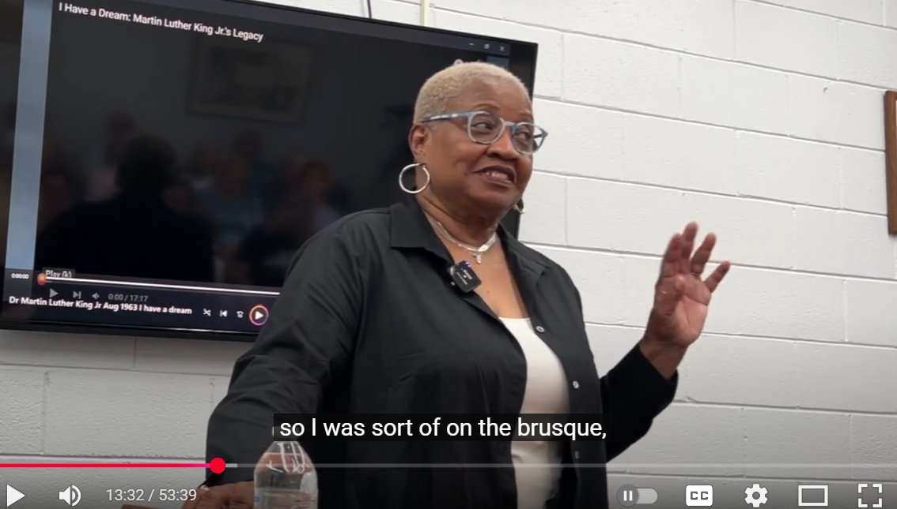
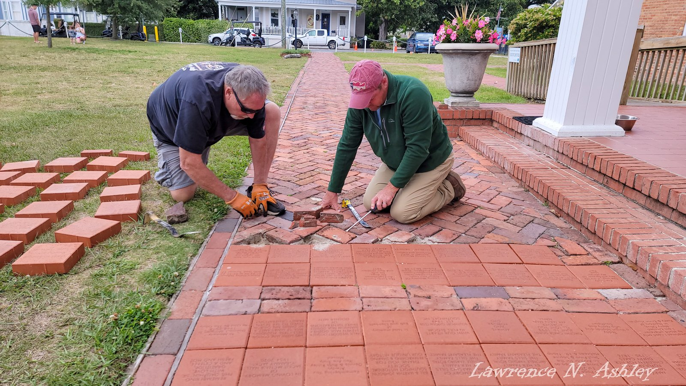
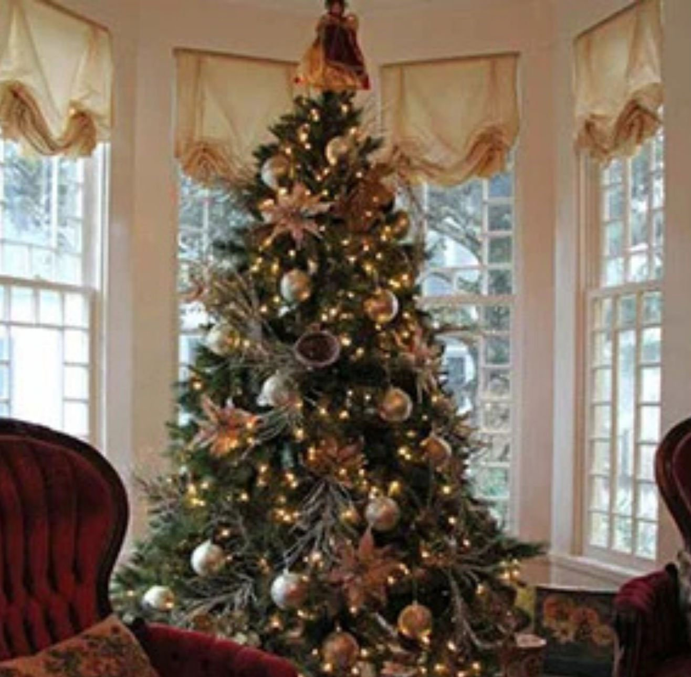
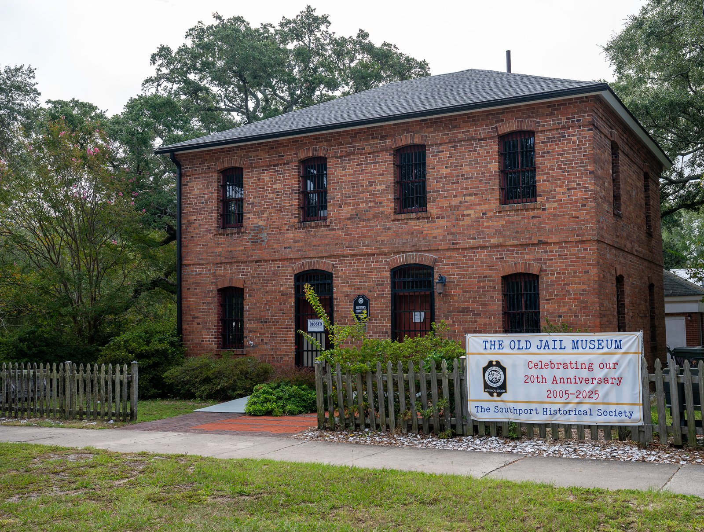
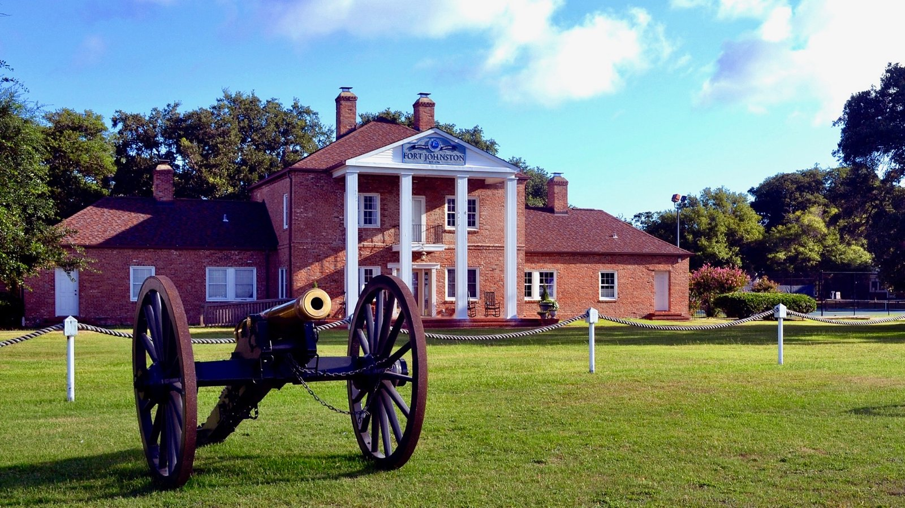
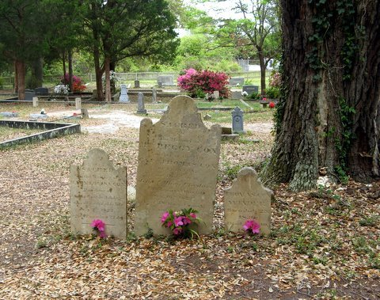
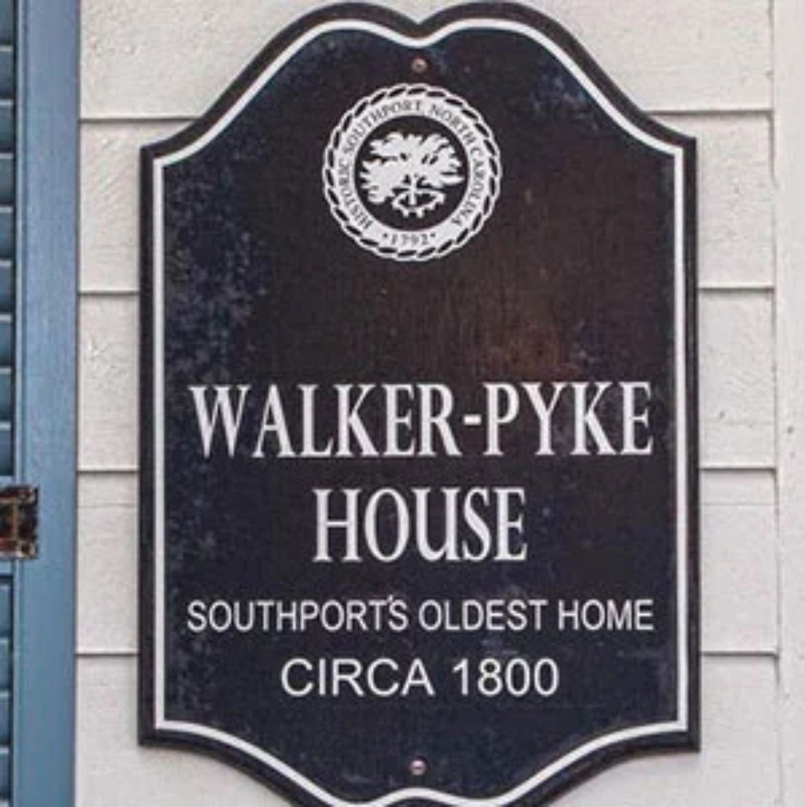
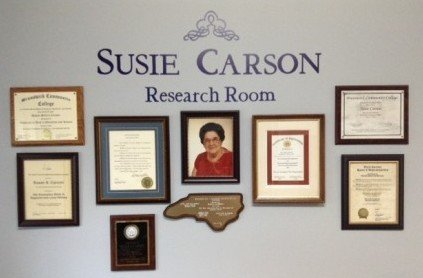
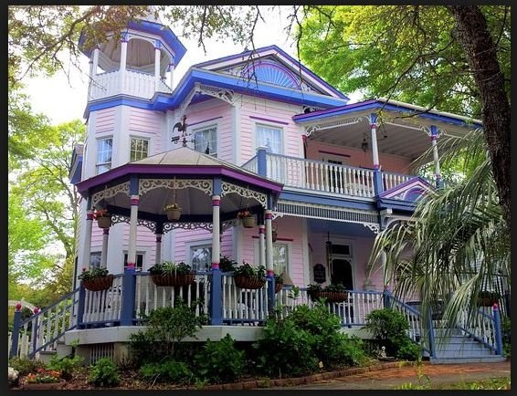

So much to see and do!
We’d love for you to take advantage of all of the resources, educational activities,
and fun events that we offer throughout the year.

SHS Tuesday Talks & Meetings
The SHS Tuesday Talks are a great way to learn about local history and meet others who share this passion. The meetings are open for everyone to enjoy – you needn’t be an SHS member to attend.
Talks are scheduled for 10:00 a.m. on the second Tuesday of each month and are held at the Harper Library on Moore Street.
Learn More
Southport Commemorative Bricks
The Commemorative Brick Program is your chance to add your personalized support to play an important role in keeping Southport’s history alive.
Learn More
Southport Holiday Tour of Homes
Part of the City of Southport’s Winterfest Festival, the Southport Historical Society’s Annual Southport Holiday Tour of Homes is held on the second Saturday in December — and for the first time this year, also on the second Friday.
This fundraiser is a wonderful opportunity to see the lovely homes of Southport all dressed up for the holidays!
Learn More
Old Brunswick County Jail Museum
The Old Brunswick County Jail was built in Southport in 1904.
It is now a fascinating museum, open to the public from April through October.
Step back in time for great family fun!

Southport Museum & Visitor’s Center
Fort Johnston was established as a British fort in 1745, as the first commissioned fort in North Carolina.
The Garrison House is now home to the Southport Visitor’s Center and Museum, which tells the story of the many facets of Southport’s history.
Don’t forget to look for treasures at the Visitor’s Store!
Learn More
Smithville Burying Ground
Established in 1792, the Old Smithville Burying Ground is the oldest and largest cemetery in Brunswick County.
Click the link below for more details, including the first survey map of the burying ground with location coordinates for each gravesite.
Learn More
Historic Plaques
There are many lovely historical buildings in the city of Southport. They are a visible reminder of our rich heritage and have a special place in our hearts.
The Historic Plaque program enables us to formally recognize and honor these structures.
Learn More
Susie Carson Research Room
Susie Carson’s vast collection of files that capture Southport’s history “A to Z”, as well as her books, photos, and lesson plans represent a huge portion of the materials in the Susie Carson Research Room (SCRR) archives. SHS researchers have continued to add photos, reports and family histories to this collection.
Learn MoreSusan Sellers Carson Scholarship
Each year the Southport Historical Society offers a $2,000 academic scholarship for a graduating senior from South Brunswick High School continuing their education at an accredited 2 or 4 year college or university. One thousand dollars ($1,000) will be paid in each of the first two years of enrollment
Learn More
Southport Historic Tours
Come and stroll through Southport and enjoy our historical heritage on a self-guided walking tour of the city.
You can also experience new interactive tours via the free PocketSights app, right on your mobile device.
This is a great way to see the city and learn something along the way!